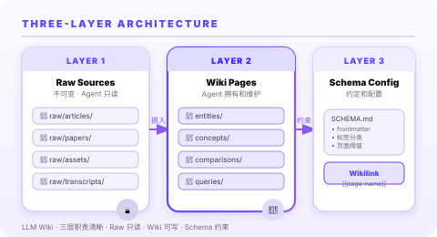
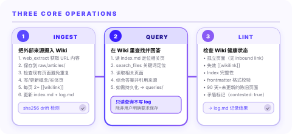

WHITE / PURPLE WORKBENCH
2026-06-18 · Hermes Agent Bundled Skill
Hermes Agent · Research Skill
把知识库变成可积累、可引用的 Markdown 网络
LLM Wiki 是 Hermes Agent 内置的知识积累技能：把一次性对话、报告、论文和文档转成三层结构的 Markdown 知识库，让 AI Agent 能够持续引用、更新和交叉推理，而不是每次都从零 RAG。
RAG 替代方案
三层架构
交叉引用
不可变源
Karpathy 模式
自进化
分类
Research
Hermes 内置六类 Skill 之一，定位知识积累。
架构
3 层
Raw → Wiki → Schema，职责清晰，不可混用。
操作
3 类
Ingest / Query / Lint，覆盖知识摄入到维护全链路。
来源
Doc
hermes-agent.nousresearch.com 官方文档。

LLM Wiki 把传统 RAG 的"每次查询重新检索"变成了"一次性整理、持续引用"：Wiki 编译一次，跨次对话都能用，而且知识之间天然有交叉链接，矛盾在摄入时就已经被标记。

为什么不是 RAG：一次性整理 vs. 每次从零检索
LLM Wiki 核心差异
传统 RAG
每次查询都重新从原始语料检索
检索结果之间没有链接，推理链断裂
矛盾内容被重复检索，Agent 难以判断优先级
同一知识点在多个上下文中被重复处理
检索质量依赖切分策略，不稳定
LLM Wiki
知识一次性整理进 Wiki，后续直接引用已有页面
交叉链接([[wikilink]])天然存在，推理链完整
矛盾在摄入时被标记，Wiki 里已有处理结论
新知识追加/更新，Wiki 页面长期累积
结构由 Schema 约束，LLM 和人类共同维护
本质区别：RAG 是"搜索引擎"，Wiki 是"可编辑的参考书"。RAG 每次都在重新搜索，Wiki 已经在正确的位置写好了答案。
三层架构：每层职责清晰，不可跨层操作
Raw → Wiki → Schema
Layer 1
Raw Sources · 不可变原始层
存放原始文章、论文、图片、数据文件。Agent 只读不改，通过 sha256 检测内容漂移。
- 位置：
~/wiki/raw/ - 不可变 — LLM 只读不改
- 有 frontmatter：source_url、ingested、sha256
Layer 2
Wiki Pages · Agent 知识层
LLM 拥有和维护的 Markdown 页面：实体、概念、比较、查询、综述。人类阅读，LLM 编写。
- 位置：
~/wiki/entities/等 - 用 YAML frontmatter 搜索和过滤
- 用
[[wikilink]]交叉引用 - 至少 2 个出站链接
Layer 3
Schema Config · 约定配置层
SCHEMA.md 定义工作流程、标签分类、页面阈值和更新策略，是整个 Wiki 的宪法。
- 位置：
~/wiki/SCHEMA.md - 定义 frontmatter 格式
- 定义标签分类法
- 定义页面何时创建/分割/归档
分工原则：人类负责策展来源、引导分析方向；Agent 负责总结、交叉引用、归档和维护一致性。永远不要修改 raw/ 层文件，纠正信息直接写在 Wiki 页面里。
三个核心操作：从摄入到维护的全链路
Ingest · Query · Lint
01 Ingest
把外部来源摄入进 Wiki
URL → markdown 保存到 raw/ → 讨论要点 → 检查现有页面 → 写/更新 Wiki 页面 → 更新 index.md 和 log.md。
web_extract → raw/articles/*.md
写入 frontmatter（source_url/ingested/sha256）
写 [[概念页]] / [[实体页]]
更新 index.md + log.md02 Query
在 Wiki 里查找并回答问题
读 index.md → 搜索相关页面 → 读取页面内容 → 综合答案 → 按需写回 queries/ 或 comparisons/。
读 index.md → search_files *.md
读相关页面 → 综合答案
如需持久化 → queries/*.md03 Lint
定期检查 Wiki 健康状态
孤立页面 → 失效链接 → Index 完整性 → frontmatter 校验 → 过期内容 → 矛盾标记 → 标签审核。
- 孤立页面（无 inbound wikilink）
- 指向不存在页面的 wikilink
- 超过 200 行的页面（需拆分）
- 90 天以上未更新的过期页面
从零启动：初始化 → 首次摄入 → 持续使用
实操路径
Step 1 · 确定路径
1 设置
WIKI_PATH 环境变量（如 ~/.hermes/wiki）2 创建目录结构：raw/、entities/、concepts/、comparisons/、queries/
Step 2 · 初始化 Schema
1 写
SCHEMA.md（标签分类、frontmatter 格式、页面阈值）2 写
index.md（sectioned 目录）3 写
log.md（append-only 操作记录）Step 3 · 首次摄入
1 读 SCHEMA.md + index.md + 最近 log.md 做 Orientation
2 用 web_extract 获取 URL 内容，写入
raw/articles/3 检查现有页面避免重复，写/更新概念/实体页面
4 每页至少 2 个
[[wikilink]]，末尾加 ^[raw/...] 出处标记5 更新 index.md 总页数，更新 log.md
Step 4 · 与 Hermes 协同
1 在 Hermes 对话中说"把 XXX 写入 wiki"，触发 Ingest 操作
2 问"wiki 里关于 XXX 有什么"，触发 Query 操作
3 问"检查 wiki 健康状态"，触发 Lint 操作
4 可用 Obsidian 打开同一目录做图形化浏览和 Graph View
Obsidian 协同：Wiki 目录本身就是 Obsidian Vault。
[[wikilink]] 自动渲染，Graph View 可视化知识网络，Dataview 插件支持 SQL 风格查询。在多台设备上用 Obsidian Sync 同步，Agent 写 Wiki，你在 Obsidian 里看。
与记忆/skill 的边界：Wiki 在哪里
各司其职
短期
session_search · 恢复对话上下文
查找过去说了什么、任务停在哪里、历史会话的中间状态。适合"上次那个调研结果在哪"。
中期
memory · 存储用户偏好和短期事实
记"用户喜欢什么格式"、"项目用 pytest 而不是 unittest"这类可被下次对话直接引用的结构化偏好。
长期
skills · 存储可复用工作流程
把"如何调查 X"这类程序性知识写成 Skill，下次同类任务直接调用而不重新描述。
知识积累
LLM Wiki · 知识网络
论文结论、人物档案、概念解析、比较分析、舆情调研 — 大型、结构化、需要交叉引用的知识资产，不适合放在记忆里。
关键认知：LLM Wiki 不是"聊天记录同步"。prior sessions 是 Wiki 的 来源之一，但 Wiki 本身是经过整理、交叉引用、矛盾已标记的知识资产。把原始对话直接倒进 Wiki 是浪费，策展后写入才有价值。